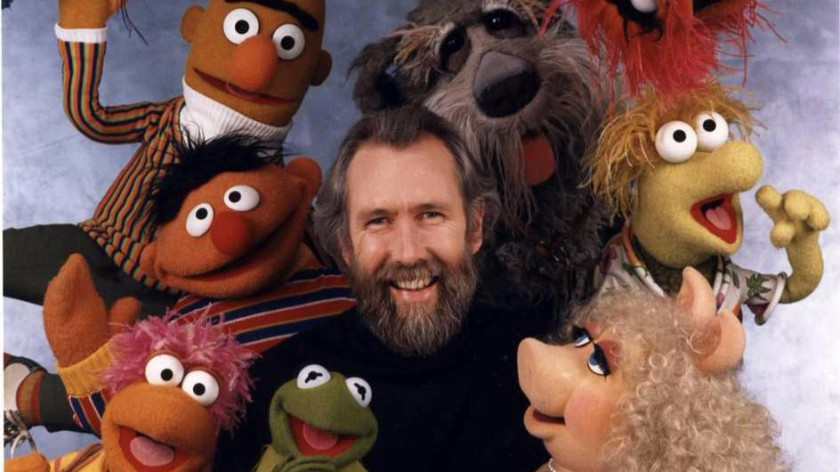

Quem sou eu?
Olá! Meu nome é Anderson Nunes, sou Aluno da Trybe e no desafio de criar uma página para testar meus conhecimentos resolvi criar uma fanpage para a melhor série de fantoches do mundo, Os Muppets! Espero que curtam essa fanpage e conheçam um pouco mais sobre esses bonecos incríveis!
História
-

-
- Os Muppets foram criados em Londres, por Jim Henson, em 1976. Os bonecos de pano faziam parte de uma série de tv que tinha como nome Muppets Show, o programa ficou na telinha até 1981. Depois disso, os Muppets estrelaram diversos programas de tv, filmes, seriados e mais um montão de programas em rede mundial.
Personagens
-
Kermit (Ou Caco, o sapo)

Caco, o Sapo / Kermit, o Sapo ou Sapo Cocas foi um dos primeiros e mais conhecidos Muppets criados por Jim Henson. Foi também Jim Henson que fez sua voz até sua morte em 1990, quando então o papel de Caco/Cocas passou para Steve Whitmire. Na realidade representa uma rã e não um sapo.
Bordão mais conhecido: "Hi-ho, Caco, o Sapo aqui!" -
Miss Piggy (Ou Piggy)

Miss Piggy, ou somente Piggy, é uma porquinha loira com personalidade de diva, com arroubos de mau humor e complexo de superioridade. É faixa preta em caratê e tem o hábito de inserir frases em francês na sua fala.
-
Fozzie Bear (Ou urso Fozzie)

Urso Fozzie é um comediante que se apresenta regularmente no Teatro Muppet. Desde o primeiro episódio do show e até hoje, Fozzie sempre foi um dos personagens principais e protagonista em todos os filmes, séries e especiais dos Muppets, ao lado de seus amigos Caco, o Sapo e Gonzo. O vestiário de Fozzie normalmente consiste apenas em um chapéu e um lenço de bolinhas.
Bordão: "Waka, waka, waka!" -
Gonzo (O Grande Gonzo)

O Grande Gonzo (The Great Gonzo no original em inglês); mais conhecido como apenas Gonzo, embora ele peça para ser chamado de apenas Grande em um episódio; é um dos grandes astros do Muppet Show e um dos mais divertidos personagens criados por Jim Henson. Gonzo é basicamente um artista excêntrico, sonhador maluco obcecado por galinhas e sem qualquer senso de realidade.
-
Rowlf (Ou Ralf)

Rowlf é um personagem muppet criado, interpretado e dublado por Jim Henson. O fantoche foi construído por Don Sahlin. Ele é considerado o 1º fantoche de Jim Henson a não ser um personagem abstrato. Rowlf é um adorável cachorro que toca piano, ukele e gaita, e tem um grande senso de humor. Ele apareceu pela primeira vez em um comercial de comida pra cachorro, junto com seu amigo Baskerville (outro cachorro, que mais tarde voltaria a encontrar Rowlf no Muppet Show).
-
Animal

Animal é um monstro selvagem e frenético que é baterista do Dr. Dentuço e a Desordem Elétrica, a banda fictícia do Muppet Show. Ele é um dos Muppets criado originalmente por Michael K. Frith. O vocabulário do animal geralmente se limita a gritos guturais e grunhidos monossilábicos, muitas vezes repetindo algumas frases simples, além da risada grave de sua marca registrada.